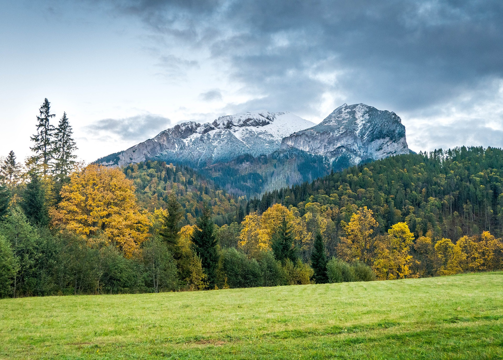

La Tierra no es solo el planeta donde vivimos; también funciona como un enorme ecosistema en el que todos los elementos naturales están conectados. Los seres vivos, el aire, el agua, el suelo y la energía del Sol interactúan constantemente para mantener el equilibrio que permite la existencia de la vida.
¿Qué significa que la Tierra sea un ecosistema?
Un ecosistema es un sistema natural formado por organismos vivos y por los elementos físicos con los que interactúan. Cuando hablamos de la Tierra como ecosistema global, nos referimos a que todo el planeta funciona como un sistema interconectado en el que la vida depende de múltiples factores que trabajan en conjunto.
Componentes Bióticos
- Plantas
- Animales
- Microorganismos
Componentes Abióticos
- Agua
- Aire
- Suelo
- Luz Solar
Los sistemas de la Tierra
Para entender mejor cómo funciona el planeta, los científicos lo dividen en cuatro grandes sistemas o "esferas". Cada uno cumple una función específica, pero todos están interrelacionados.
Atmósfera
Capa de gases que protege y regula el clima
Hidrosfera
Toda el agua del planeta
Litosfera
Superficie sólida de la Tierra
Biosfera
Conjunto de todos los seres vivos
La energía y el equilibrio del planeta
La principal fuente de energía de la Tierra es el Sol. La energía solar permite que ocurran procesos esenciales como la fotosíntesis, mediante la cual las plantas producen alimento y liberan oxígeno.
Distribución de la energía solar:
Impacto humano en el ecosistema terrestre
Deforestación
La tala de bosques destruye hábitats naturales y reduce la biodiversidad.
Contaminación
La contaminación del aire, del agua y del suelo afecta directamente a los seres vivos.
Cambio climático
Las emisiones de gases de efecto invernadero están provocando cambios en las temperaturas y climas.
Debemos cuidar la Tierra como ecosistema
Para conservar el equilibrio del planeta es necesario adoptar prácticas responsables y sostenibles.